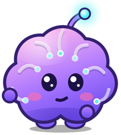
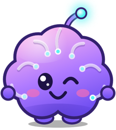
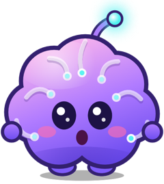
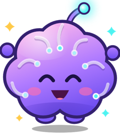

The short version
- You play without an account. We never ask for your name, email address, contacts or photos.
- Your workouts, ratings, NeuraScore, streak, coins and settings are saved on your device. We run no server and cannot see them.
- The game is free because it shows ads from Google AdMob. Google and its partners receive some device and usage data to deliver and measure those ads.
- You decide about tracking: the game asks first, and you can change your mind at any time.
- Neura Rush Pro removes the ads. Coins can be bought, but you never have to: you earn them by playing.
1Who we are
Neura Rush (the “game”) is made and published by PAUL CRP - App Development Studio (“we”, “us”). For the limited data described below, we are the controller together with the service providers named in this policy.
Questions about privacy: devpaulcrp@gmail.com

2What stays on your device
The game keeps the following only in its own storage on your iPhone or iPad. It is not sent to us:
- your rating in each game, your six skill scores and your NeuraScore, with their history over the last weeks
- today’s workout, your streak and your streak freezes, your best scores and your result in the daily challenge
- your coins, whether you earned or bought them, and the games you opened with them for the day
- settings such as sound and vibration
- whether you have Neura Rush Pro
If you delete the game, this information is deleted with it. Progress and coins cannot be brought back afterwards. Neura Rush Pro can be restored with “Restore purchases”. Apple may include the game’s storage in the device backups you have switched on.
3Advertising and the data it uses
The game shows two kinds of ads through Google AdMob: a full-screen ad now and then when you leave the result of a game, and a short video that you can choose to watch for one more life, to open a locked game for the day, or for coins. There are no ads while you are playing, none before you have finished your first games, and none at all with Neura Rush Pro. To deliver, limit, measure and protect those ads, the Google Mobile Ads software inside the game collects the data below and sends it to Google and its advertising partners. We do not receive this data in a form that identifies you.
| Data | Used for | Linked to you | Used to track you |
|---|---|---|---|
| Device identifiers (such as the advertising identifier, if you allow it) | Third-party advertising, our own advertising, analytics | Yes | Yes, with permission |
| Advertising data (which ads were shown and tapped) | Third-party advertising, our own advertising, analytics | Yes | No |
| Product interaction (app launches and activity in the game) | Third-party advertising, our own advertising, analytics, making the game work | Yes | No |
| Approximate location (derived from your internet address; never GPS) | Third-party advertising, our own advertising, analytics, making the game work | Yes | No |
| Crash data | Analytics | No | No |
| Performance data (loading times, energy use) | Third-party advertising, our own advertising, analytics, making the game work | No | No |
| Other diagnostic data | Third-party advertising, our own advertising, analytics | No | No |
This is the same list you see under “App Privacy” on the game’s App Store page. The game itself contains no other advertising or analytics software.
How Google uses this information: How Google uses information from apps that use its services and the Google Privacy Policy.

4Your choices
Tracking permission
Before any ad is requested, iOS asks whether the game may track your activity across other companies’ apps and websites. If you choose “Ask App Not to Track”, the advertising identifier is not shared and ads are not based on tracking. You can change this at any time in the Settings app under Privacy & Security › Tracking.
Consent in Europe
If you are in the European Economic Area, the United Kingdom or Switzerland, the game first shows a consent message from Google. You can consent, refuse, or manage each purpose and partner separately. You can reopen that message whenever you like in the game under Settings › “Ad privacy choices”. If you refuse, you may still see ads, but they are not personalised.
Other controls
- iOS Settings › Privacy & Security › Apple Advertising and › Tracking limit advertising across all your apps.
- Google’s ad settings: My Ad Center.
- Neura Rush Pro removes the ads. For Pro players the advertising software is not started at all.

5Purchases
The game offers two kinds of purchase. All payments are handled by Apple. We never see your card details or your Apple Account; the game only learns from Apple whether a purchase succeeded, so it can give you what you bought.
- Neura Rush Pro opens every game at any time and all five games of the daily workout, shows your progress over the weeks and removes the ads. You can have it as a subscription, by the month or by the year, or buy it once for good. A subscription renews by itself until you cancel it; you can cancel at any time in your App Store account settings, and it then runs to the end of the period you paid for. A free trial, where one is offered, turns into the paid subscription unless you cancel before it ends.
- Neura Rush Pro can be restored on your devices with “Restore purchases”. If you bought “Unlock all games” in an earlier version, you have Neura Rush Pro for good.
- Coin packs in three sizes. Coins pay for one more life in a game, for opening a locked game for a day, and for streak freezes. Coins are used up as you spend them, are kept only on your device, and cannot be restored or moved to another device.
- You never have to pay to play: coins are also earned in every game, and a part of the game is free every day.
- Refunds are handled by Apple under Apple’s terms.
6Game Center
If you are signed in to Apple’s Game Center, the game sends your scores (your best in the games, your NeuraScore, your result in the daily challenge) and your achievement progress to Apple, so they can appear on the leaderboards and in your profile. This is optional: the game works without Game Center, and you can sign out in the Settings app. Apple processes that information under the Apple Privacy Policy.
7What the game does not do
- It does not ask for your name, email address, phone number, contacts, photos, camera, microphone or precise location.
- It has no accounts, no chat and no way of posting content.
- It does not send your progress, your ratings or your coins to us or to anyone else.
- The words you make in the word game are checked on your device, with the dictionary that is part of iOS.
- We do not sell personal data for money.
8Children
Neura Rush is a game for a general audience. It is not directed specifically at children under 13 (or the higher age set by the law of your country), and we do not knowingly collect personal data from them. Parents can switch off tracking requests and in-app purchases for a child’s device with Screen Time in the Settings app. If you believe a child has given personal data through the game, write to us and we will help.
9Legal bases and your rights
Where the GDPR or a similar law applies, the data described above is processed on these grounds:
- Your consent for personalised advertising and tracking. You can withdraw it at any time, as explained in section 4.
- Legitimate interests in running a free game: showing non-personalised ads, limiting how often they appear, preventing fraud and fixing faults.
- Performance of a contract to deliver what you buy.
Depending on where you live, you may have the right to access, correct, delete or move your data, to restrict or object to its use, and to complain to your data protection authority. Because we keep no personal data about you on any server, most requests are best made with the tools above or directly to Google and Apple, but you can always write to us and we will help.
United States residents: sharing an advertising identifier for personalised ads can count as “sharing” or “selling” under some state laws. You can opt out by refusing the tracking permission described in section 4.
10Keeping, transferring and protecting data
Data on your device stays there until you delete the game. Google and Apple keep the data they receive for the periods set out in their own policies, and may process it in countries other than your own, including the United States, using the safeguards those policies describe.
The game uses the protections built into iOS and Apple’s and Google’s official software. No method of storing or sending data is perfectly secure, so we cannot promise absolute security.

11Scores, coins and progress
Neura Rush is a game. The NeuraScore, the skill scores and the ranks show how you are doing in its games; they are not a medical, psychological or intelligence test, and the game does not diagnose, treat or prevent anything.
Coins, scores and anything else you earn or buy in the game are for play only. They have no cash value, cannot be exchanged for money and cannot be passed to another player. We may rebalance games, prices in coins and rewards in later versions. Because coins and progress are stored only on your device, we cannot recover them if the game is deleted or the device is lost.
12Changes and contact
This policy describes version 3.0 of the game and later. Earlier versions had no ads and no coins; they used Apple’s purchases and Game Center.
If this policy changes, the new version will be published on this page with a new date. If a change is important, the game or its App Store page will say so.
Write to us at devpaulcrp@gmail.com.
By installing or playing Neura Rush you confirm that you have read this policy. Use of the game is also covered by Apple’s standard licence agreement.